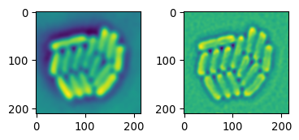
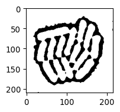
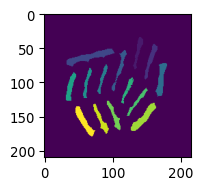
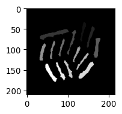
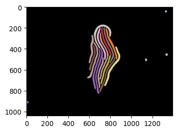
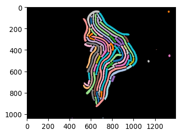

# Generate a shuffled colormap to be used to color labeled imagesdef generate_shuffled_cmap(n_labels=255, seed=42):""" Generate a shuffled colormap to be used to color labeled images, with the first color set to black. """import numpy as npimport matplotlib.pyplot as pltimport matplotlib.colors as mcolors# Generate a colormap with n_labels distinct colors cmap = plt.cm.get_cmap('tab20', n_labels) colors = cmap(np.arange(n_labels))# Shuffle the colors except the first one np.random.seed(seed) shuffled_colors = colors.copy() np.random.shuffle(shuffled_colors) # Set the first color to black shuffled_colors[0] = [0, 0, 0, 1]# Create a new colormap from the shuffled colors shuffled_cmap = mcolors.ListedColormap(shuffled_colors)return shuffled_cmapshuffled_map = generate_shuffled_cmap()
/var/folders/8w/2thz_cgn3xn13rhrxb2dvb5w0000gn/T/ipykernel_77117/2867552651.py:10: MatplotlibDeprecationWarning:
The get_cmap function was deprecated in Matplotlib 3.7 and will be removed in 3.11. Use ``matplotlib.colormaps[name]`` or ``matplotlib.colormaps.get_cmap()`` or ``pyplot.get_cmap()`` instead.
Collect the relevant code we had earlier
import matplotlib.pyplot as pltimport seaborn as snsimport tifffile as tiffimport numpy as npimport skimage as skfrom scipy import statsfrom scipy import ndimageFIGSIZE21 = (10/2.54,5/2.54) FIGSIZE22 = (10/2.54,10/2.54)
def my_plot_12(img1, img2, mycmap='viridis'):# plot two images side by side fig, axs = plt.subplots(1,2, figsize=FIGSIZE21) _ = axs[0].imshow(img1, cmap=mycmap) _ = axs[1].imshow(img2, cmap=mycmap) plt.tight_layout() def my_plot_1(img1, mycmap='gray', myfigsize=(5/2.54,5/2.54)): fig, ax = plt.subplots(1,1, figsize=myfigsize) _=plt.imshow(img1, cmap=mycmap)
# Let's also load an image of some bacteria (Wehrens et al.)path_img_ecoli ='../images/biological/microcolony_ecoli.tif'img_ecoli = tiff.imread(path_img_ecoli)# invert imageimg_ecoli_inv = np.max(img_ecoli)-img_ecoli
# Show the results of LoG on the bacteriaimg_ecoli_gauss = sk.filters.gaussian(img_ecoli_inv, sigma=3)edges_log = sk.filters.laplace(img_ecoli_gauss)# show bothmy_plot_12(img_ecoli_gauss, edges_log, mycmap='viridis')

# Threshold edges_log by triangle methodmask_ecoli_log = edges_log > sk.filters.threshold_triangle(edges_log)my_plot_1(mask_ecoli_log)

# Let's erode this by 5 pxmask_ecoli_log_eroded = sk.morphology.erosion(mask_ecoli_log, footprint=sk.morphology.disk(5))# Showmy_plot_1(mask_ecoli_log_eroded)
# Let's combine with our original triangle mask# first remove small objectsmask_ecoli_triangle_filtered = sk.morphology.remove_small_objects(mask_ecoli_triangle, min_size=50)mask_ecoli_log_eroded_filtered = sk.morphology.remove_small_objects(mask_ecoli_log_eroded, min_size=50)# Combinemask_bacteria_slim = np.logical_and(mask_ecoli_triangle_filtered, mask_ecoli_log_eroded)# And labelmask_bacteria_slim_labeled = sk.measure.label(mask_bacteria_slim)my_plot_1(mask_bacteria_slim_labeled, mycmap='viridis')

# This is a great tool to separate one of earlier bacterial images.# Apply watershed to mask_ecoli_log, using mask_bacteria_slim_labeled as seedsmask_bacteria_combined = sk.segmentation.watershed(-edges_log, markers=mask_bacteria_slim_labeled, mask=mask_ecoli_log)# Show the resultmy_plot_1(mask_bacteria_combined, mycmap='viridis')
Creating sensible functions to achieve segmentation
# (img_ecoli_inv needs to be loaded earlier)def my_detect_edges(the_img):""" Detect edges using LoG (Laplacian of Gaussian) """ the_img = sk.filters.gaussian(the_img, sigma=3) the_img = sk.filters.laplace(the_img)return the_imgimg_ecoli_edges = my_detect_edges(img_ecoli_inv)my_plot_1(img_ecoli_edges)
# Get foreground mask_foreground = sk.morphology.dilation(mask_ecoli, footprint=sk.morphology.disk(5))def produce_seeds(mask_ecoli_edges, mask_foreground):""" Combine edge and raw mask to produce regions that correspond to single E. coli, which can be used as seeds."""# Let's erode this by 5 px mask_ecoli_edges_eroded = sk.morphology.erosion(mask_ecoli_edges, footprint=sk.morphology.disk(5))# Combine them to get seeds mask_seeds = np.logical_and(mask_ecoli_edges_eroded, mask_foreground)# Label mask_seeds_labeled = sk.measure.label(mask_seeds)return mask_seeds_labeledmask_seeds_labeled = produce_seeds(mask_ecoli_edges, mask_ecoli)# my_plot_12(mask_ecoli_edges_eroded, mask_ecoli_dilated)my_plot_1(mask_seeds_labeled)

# Apply the watershed mask_bacteria_watershed = sk.segmentation.watershed(~mask_ecoli_edges, markers=mask_seeds_labeled, mask=mask_ecoli_log)my_plot_12(~mask_ecoli_edges, mask_seeds_labeled)# Show the resultmy_plot_1(mask_bacteria_watershed, mycmap='viridis')
# now apply it to a few other images# 1247img_ecoli_1247 = tiff.imread('/Users/m.wehrens/Data_notbacked/2025_Py-Image-wokshop_Filamentation-example-data/images/pos3crop-p-2-1247.tif')mask_ecoli_1247 = segment_bacterial_img(img_ecoli_1247)my_plot_1(mask_ecoli_1247, mycmap=shuffled_map, myfigsize=(10/2.54,10/2.54))# 1498img_ecoli_1498 = tiff.imread('/Users/m.wehrens/Data_notbacked/2025_Py-Image-wokshop_Filamentation-example-data/images/pos3crop-p-2-1498.tif')mask_ecoli_1498 = segment_bacterial_img(img_ecoli_1498)my_plot_1(mask_ecoli_1498, mycmap=shuffled_map, myfigsize=(10/2.54,10/2.54))


# A histogram of areas in mask_ecoli_1247props_1247 = sk.measure.regionprops(mask_ecoli_1247)plt.figure(figsize=(5/2.54,5/2.54))# TO DO: FIX A BUG HERE..# sns.histplot(areas_1247, bins=30, kde=True)# plt.title('areas_1247')# Also for mask_ecoli_watershedprops_ecoli = sk.measure.regionprops(mask_ecoli_watershed)plt.figure(figsize=(5/2.54,5/2.54))# TO DO: FIX A BUG HERE..# sns.histplot(areas_ecoli, bins=30, kde=True)# plt.title('areas_ecoli')